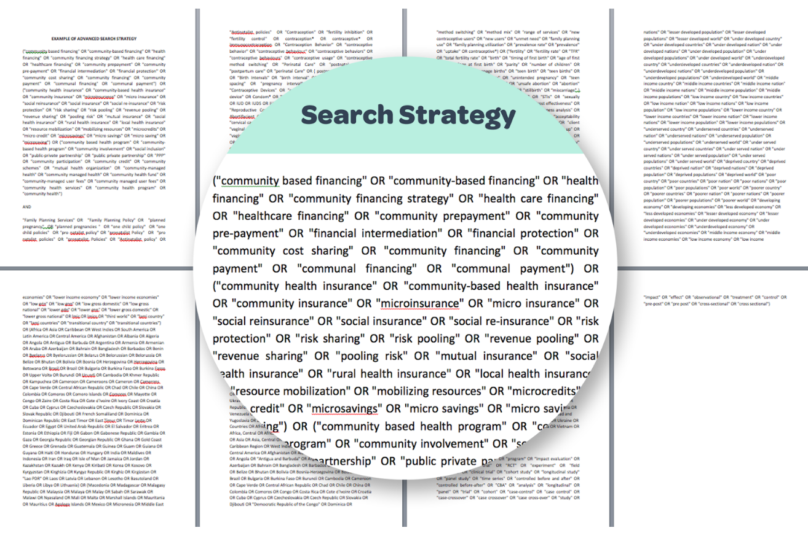
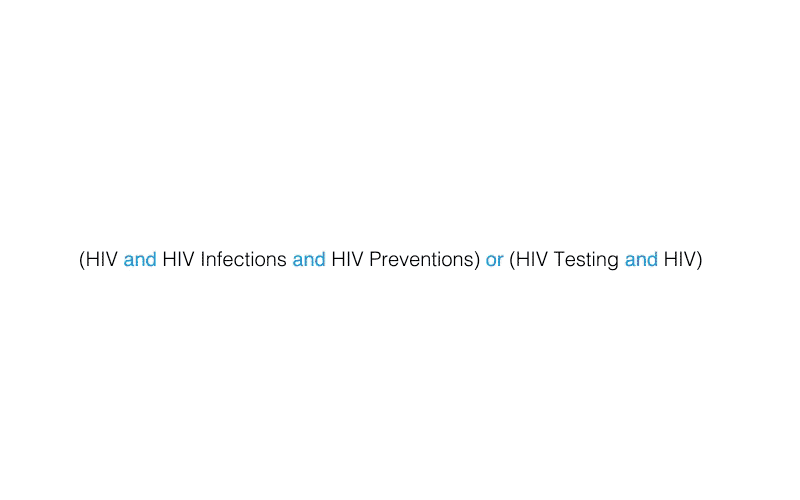
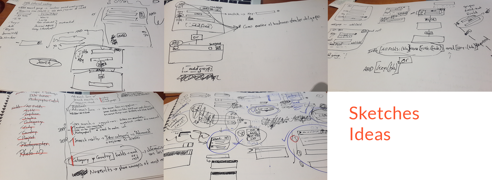

Popline - Johns Hopkins Popline
John Hopkins University - Popline has an advanced search interface that needed a redesign because the researchers didn't have the flexibility to do their search strategies. My job was to improve this advanced feature to make it easy for researchers to create big search strategies that were not possible.

What I did
To understand the context, I read the Personas, use cases, and also typical search strategies. And with these information and a couple of calls I held with the Popline team to clarify some information, I began to sketch and prototype how this new advanced search would work, and to explain this over a video call, I created a small video and walked through the stakeholders.

This asset helped our communication on what was in my head and what they were understanding of the functionality of the advanced search. We were able to iterate this concept and improve it over time.

One of the challenges I had with this project was the level of interaction this prototype needed to have to communicate all of the states and possibilities of the feature, but creating the video really helped to do this job.
Key tools and deliverables
- Stakeholder Interviews
- Sketching
- Prototyping
Results
The new interface got online, and users sent kudos to the team. Now they were able to do, save and reuse searches that before was impossible to make.